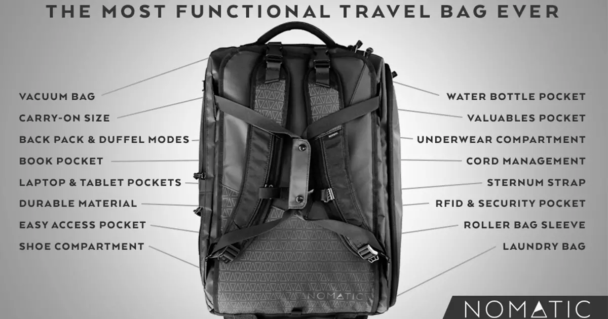
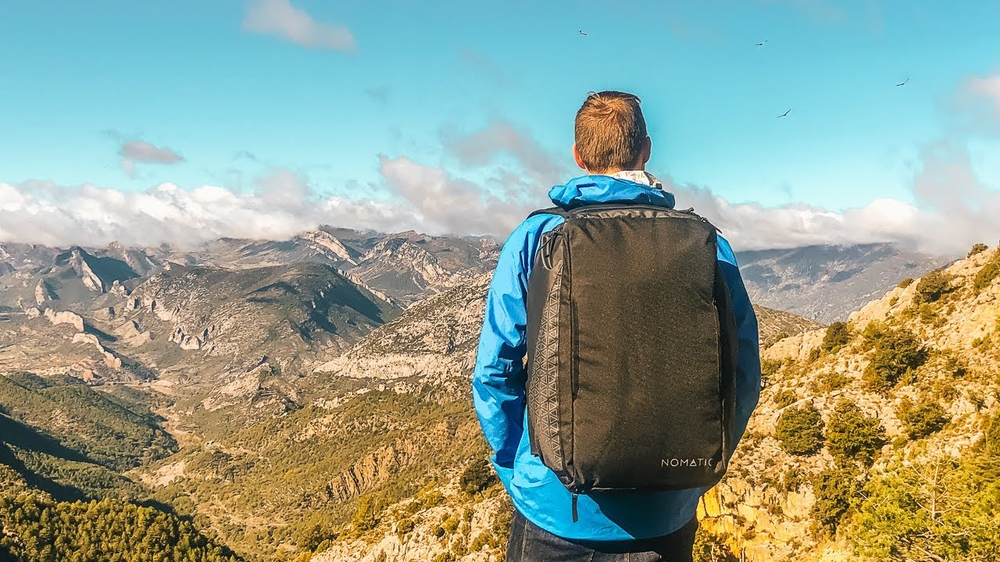
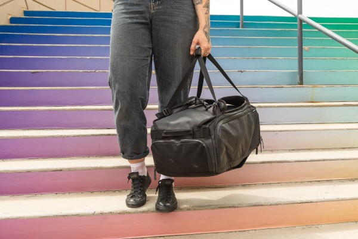
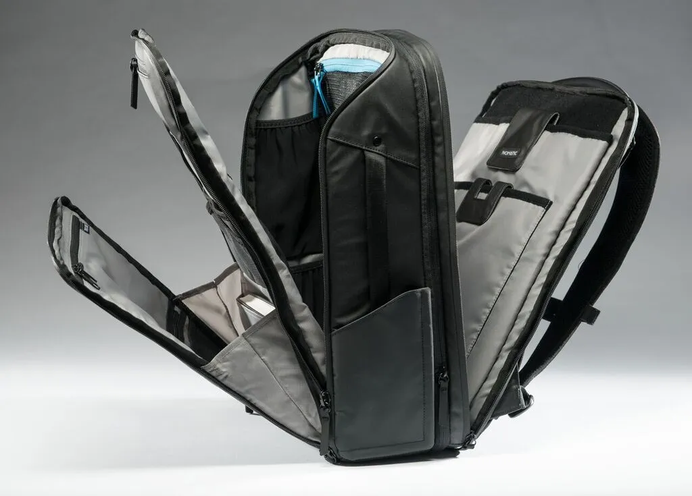
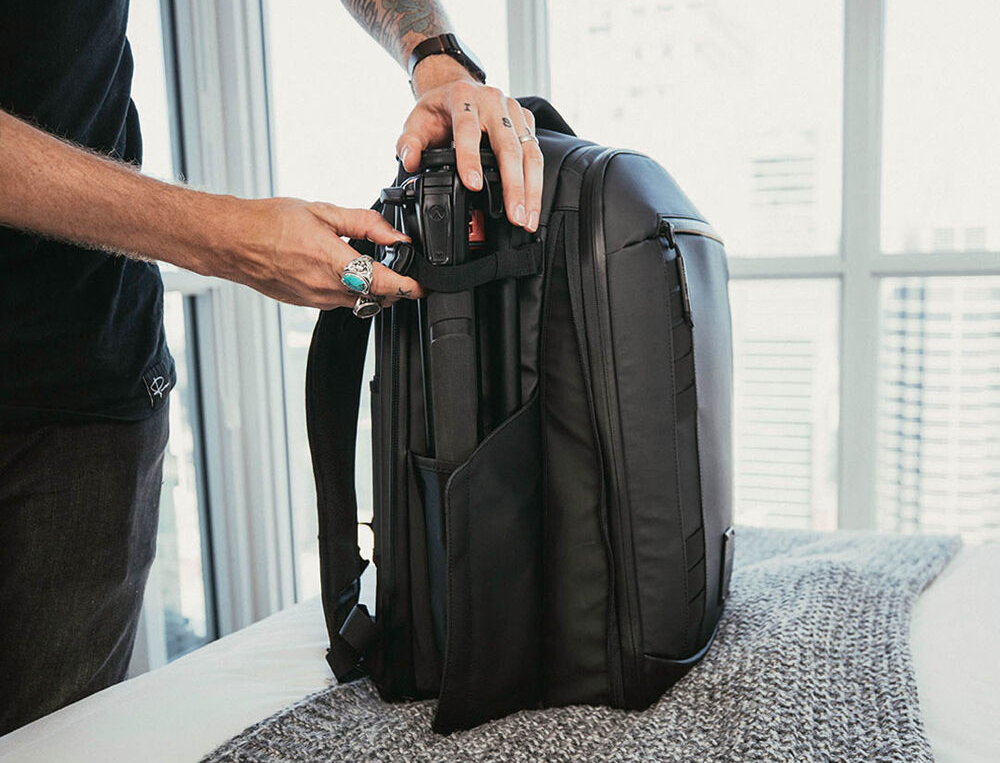
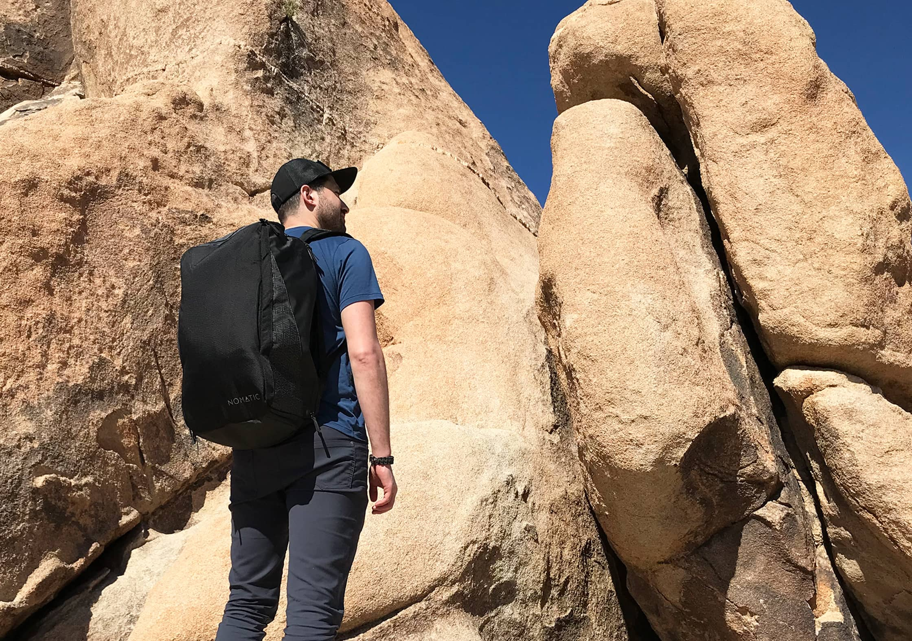

| Home | About | Reviews | Articles | Contact |
| Nomatic Travel Bag – The Ultimate Carry On Bag? |
| Key Features | |
| With so many awesome inventions and features in backpacks these days lets run through what the Nomatic range are boasting to help make your life easier… • Carry on size • Durable, waterproof materials • Suitcase open style for easy packing • Bottle pocket (waterproof and self contained) • Roller bag handle pass through • RFID and security pocket • Detachable waist straps • Laptop/tablet compartment • Backpack or duffle bag carry options • Shoe compartment with ventilation |
 |
| Design | |
| First off lets talk about the overall design of the bag – because everyones looking for something functional that also looks good right? Well the Nomatic travel bag certainly looks sleek, minimalist and dare I say it, kinda sexy!The branding is there, but subtle, the all black colouring means it would look as at home next to your desk in an office as on the road. One of the best parts of the design though for me is the fact you can open up like a suitcase (so no top loading here) which means it’s easy to pack and most importantly – easy to find stuff! This also doubles up as a security feature too, with your laptop being against your back – so no one can sneakily slip it out whilst you aren’t paying attention. |  |
| Build Quality | |
| And of course along with design the other thing you have to look for in a backpack (no matter where you’re travelling or what you’re doing) is build quality. It doesn’t matter how many epic features a bag has or how good it looks – if it’s going to fall apart in a month then it’s pretty much useless! Admittedly I’ve only been using the Nomatic travel backpack for a month, but I can already tell it’s build to last. From the durable, waterproof materials the main part of the pack is made out of, to the double stitching, zippers and metal buckles – the Nomatic team haven’t cut any corners and I’d be pretty happy to bet this one is going to last me a long while. |  |
| Keep Organised | |
| Ok, ok I’m not the average traveller when it comes to whats in my carry on bag and how I keep things organised – but there are plenty of inbuilt features, pockets and compartments you can utilise to keep things in their right place. And it’s really easy to customise it and make it your own. Case in point – the top pocket designed for a water bottle I’ve turned into my camera compartment – fitting a GoPro, Osmo Pocket and Sony A6300 camera into it, allowing easy access to all my gear on the road and separate from everything else. |  |
| 30 or 40 litres? | |
| It took me a while to decide whether to grab the 30 litre or the 40 litre option when choosing my Nomatic travel bag but ultimately I opted to go for the 30 litre and I’m definitely happy with my decision – it sounds stupid but it feels surprisingly big and spacious!30 litres (or the Travel Backpack option) is ideal if you’re just looking for a carry on bag to keep your gadgets in, but still also travelling with a large backpack as well.If however you want to slimline your travel gear and travel hand luggage only then I’d say go for 40 litre option.One word of wanting though – both backpack ARE the correct dimensions for hand luggage but I would say it’ll be pretty easy to over pack them and get them over the weight limit, so you might end up checking them in! |  |
| Is The Nomatic Travel Bag For You? | |
| So is the Nomatic Travel bag what you’re looking for? Well if you’re looking for something. cheap and simple then not at all, keep looking. If, however, you’re looking to investing an epic carry on bag, that packs in heaps of features, solid build quality and plenty of organisational options into a elegant and sleek design then YES – you’ll be totally stoked with any of their backpack range! Everyone who has checked out my backpack over the last few weeks has had nothing but good feedback for it and rightly so, it brings a lot to the table. |  |